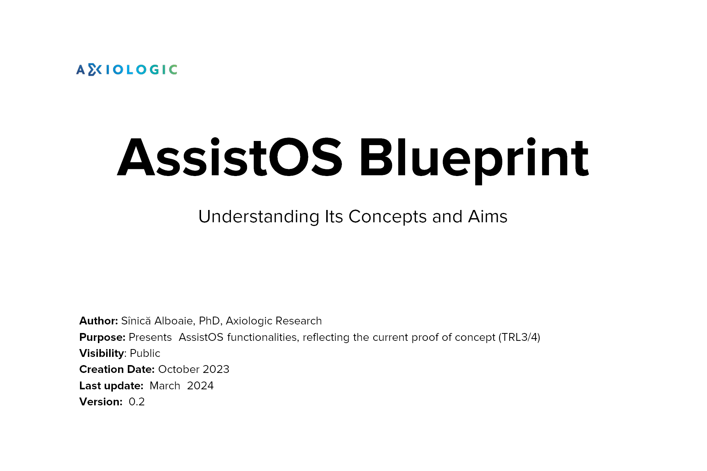
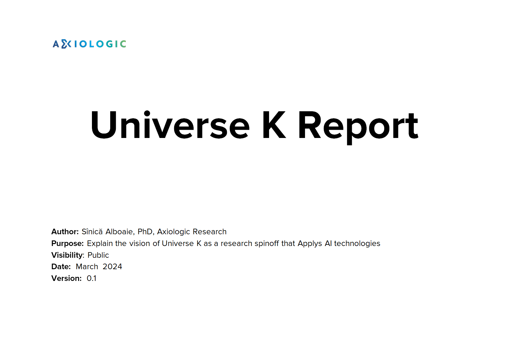
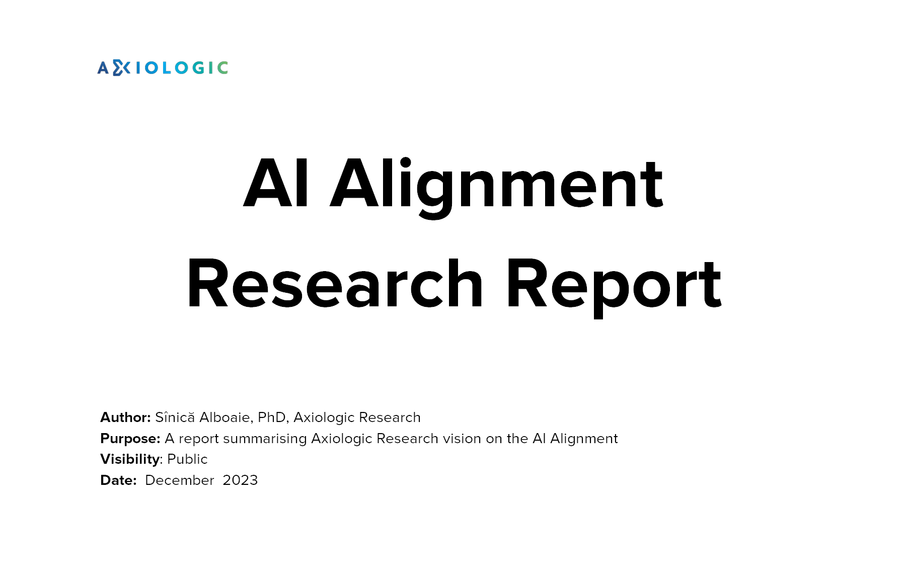
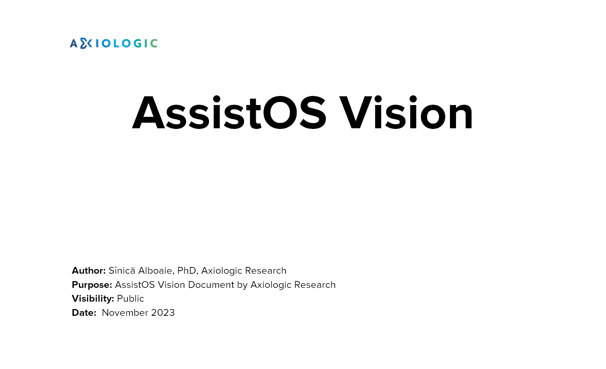
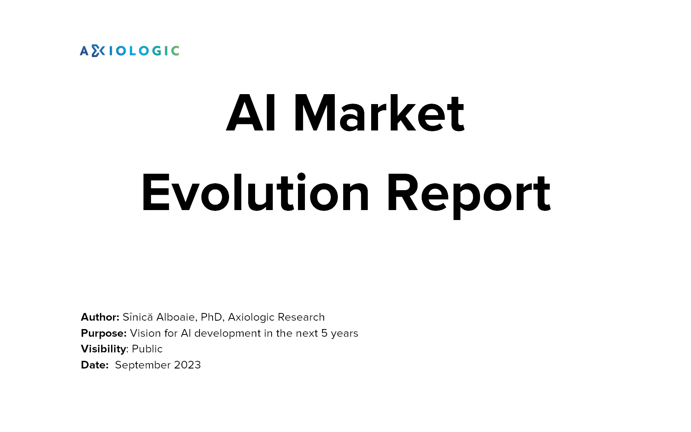
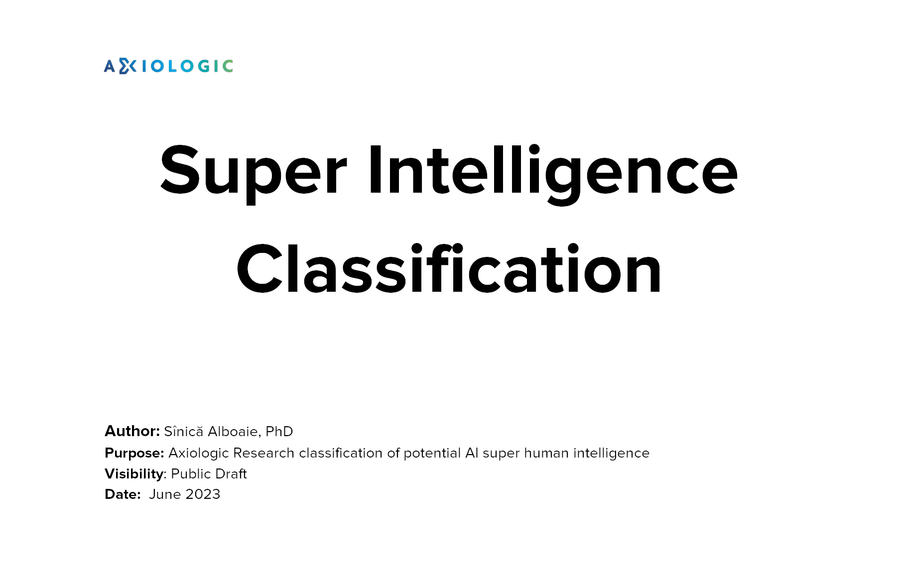
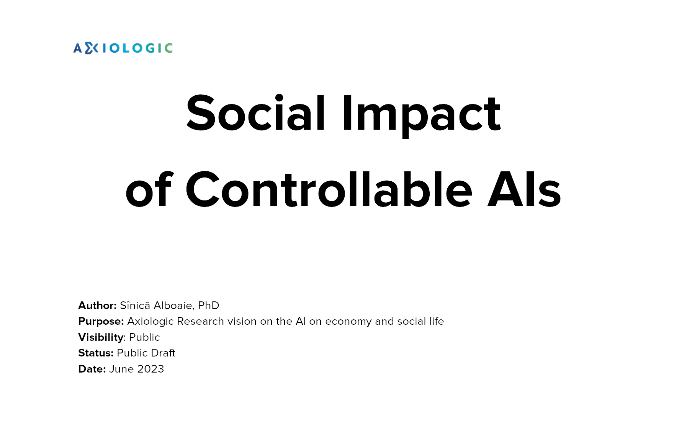

This section contains previous materials and research reports related to the AssistOS project.
Thinking Databases (2024)
LLM-Based Domain-Specific Inference Engines (2024)
AssistOS Blueprint (2024)
Universe K Report (2024)
AI Alignment Research Report (2024)
MIDAS (2024)
Choreographies, DSUs, SVDs for Multi-Agent Systems (2023)
AssistOS Vision (2023)
AI Market Evolution Report (2023)
Super Intelligence Classification (2023)
Social Impact of Controllable AIs (2023)